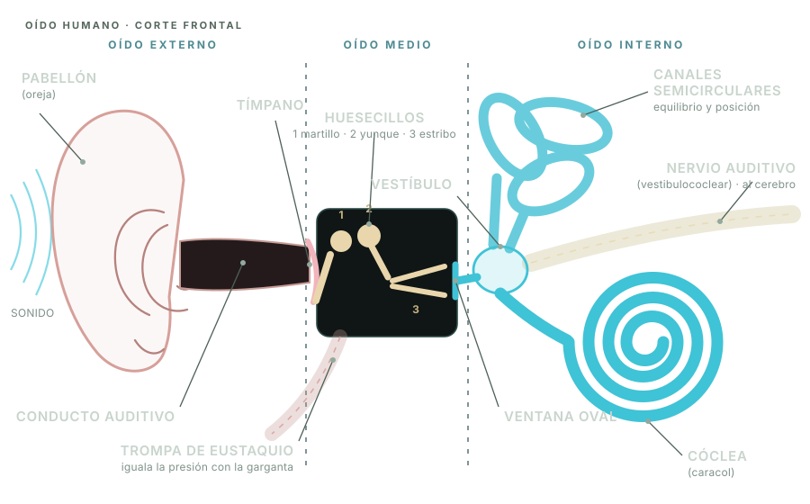
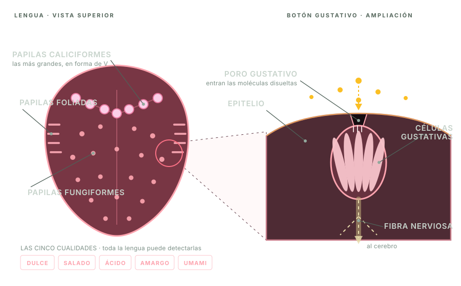
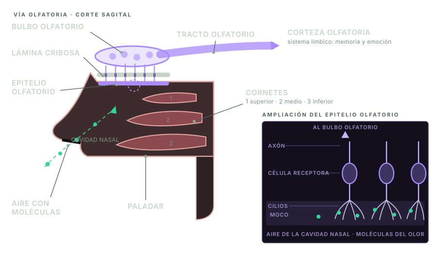
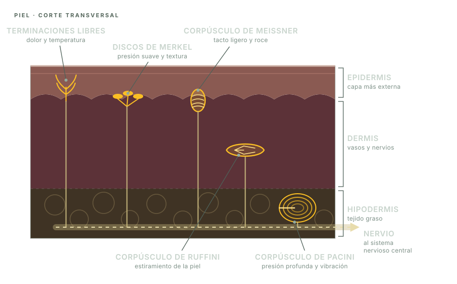

¿Cómo conocemos el ambiente?
Los sentidos no son simples “ventanas”. Son sistemas de detección que seleccionan información, la convierten en señales eléctricas y la envían al sistema nervioso para que sea interpretada.
A cada momento llegan al cuerpo cambios de luz, vibraciones del aire, moléculas químicas, presión, temperatura y muchas otras formas de energía. No todas esas variaciones son útiles. Los receptores sensoriales responden sólo a ciertos estímulos y dentro de determinados límites. Por ejemplo, nuestros ojos detectan una pequeña parte de la radiación electromagnética y nuestros oídos una franja limitada de frecuencias sonoras.
La sensación comienza en el receptor, pero la percepción se construye en el cerebro. Por eso una misma imagen puede interpretarse de maneras diferentes, un olor puede despertar un recuerdo y dejamos de notar la ropa sobre la piel después de unos minutos.
Del estímulo a la percepción
Aunque cada sentido tiene estructuras propias, todos siguen una organización general.
Estímulo
Es un cambio físico o químico capaz de activar un receptor: luz, sonido, presión o moléculas disueltas.
Recepción
Células especializadas detectan el estímulo. Cada receptor es más sensible a un tipo particular de energía.
Transducción
El receptor transforma la energía del estímulo en cambios eléctricos de la membrana celular.
Conducción
Los impulsos nerviosos viajan por nervios sensitivos hacia la médula espinal y el encéfalo.
Interpretación
El cerebro integra la señal con recuerdos, atención y contexto. Así aparece una experiencia consciente.
Cinco capítulos para explorar

Vista
Cómo el ojo enfoca la luz y la retina inicia la señal visual.

Oído y equilibrio
Vibraciones, cóclea y orientación de la cabeza.

Gusto
Papilas, botones gustativos y cinco cualidades básicas.

Olfato
Moléculas volátiles, memoria y adaptación.

Tacto y sensibilidad corporal
Contacto, presión, vibración, temperatura, dolor y posición corporal.
Los sentidos trabajan en equipo
El cerebro combina información de varios sentidos para construir una interpretación coherente. Al comer, la experiencia llamada “sabor” integra gusto, olfato, temperatura y textura. Para mantener el equilibrio utiliza datos del oído interno, la vista y receptores de músculos y articulaciones. Cuando una fuente sensorial falta, el sistema nervioso puede dar más peso a las restantes.
Comer
Gusto + olfato + tacto + temperatura.
Equilibrio
Oído interno + vista + propiocepción.
Conversar
Oído + vista + memoria + lenguaje.
Actividad integradora
Mapa sensorial del aula
Durante dos minutos, registrá cinco estímulos sin desplazarte: uno visual, uno sonoro, uno olfatorio, uno táctil y —sólo si es seguro— uno gustativo. Para cada caso escribí: estímulo, receptor, órgano, nervio o vía y posible interpretación. Luego compará tu registro con el de otra persona. ¿Detectaron lo mismo? ¿Por qué puede cambiar la atención?
Para pensar: si los receptores sólo envían impulsos eléctricos, ¿por qué sentimos experiencias tan diferentes como un color, un sonido o un aroma?